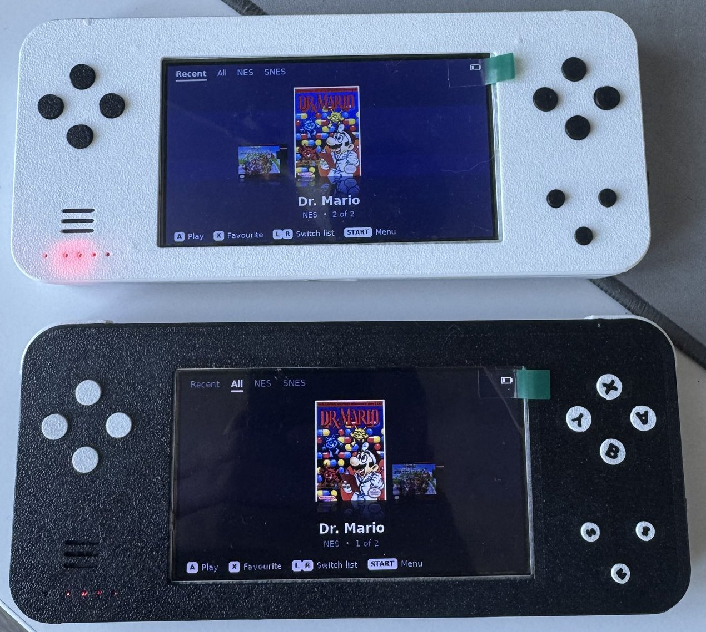
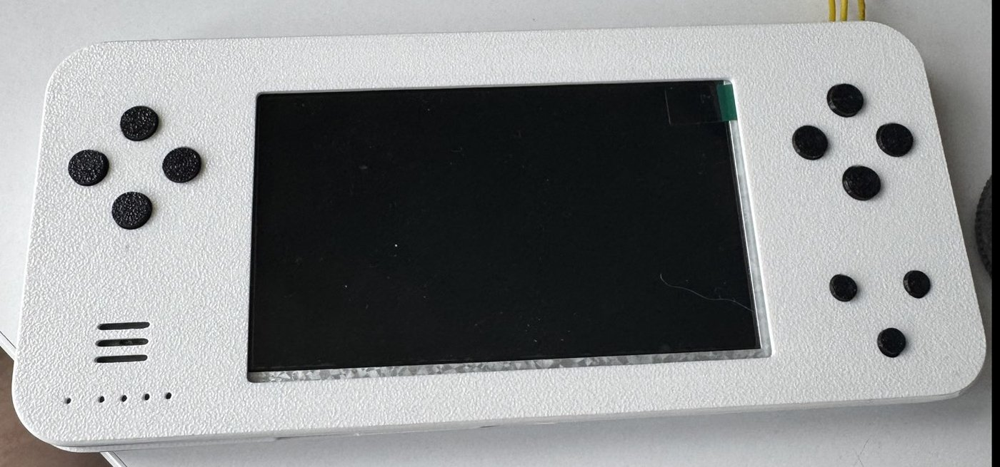
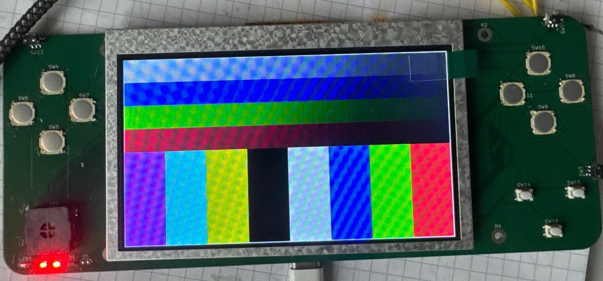
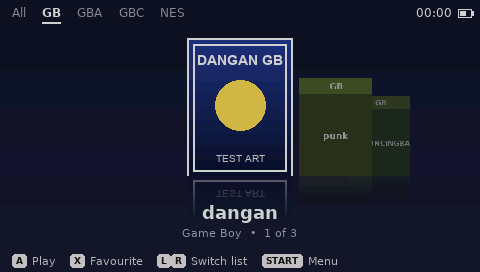
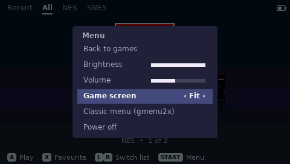
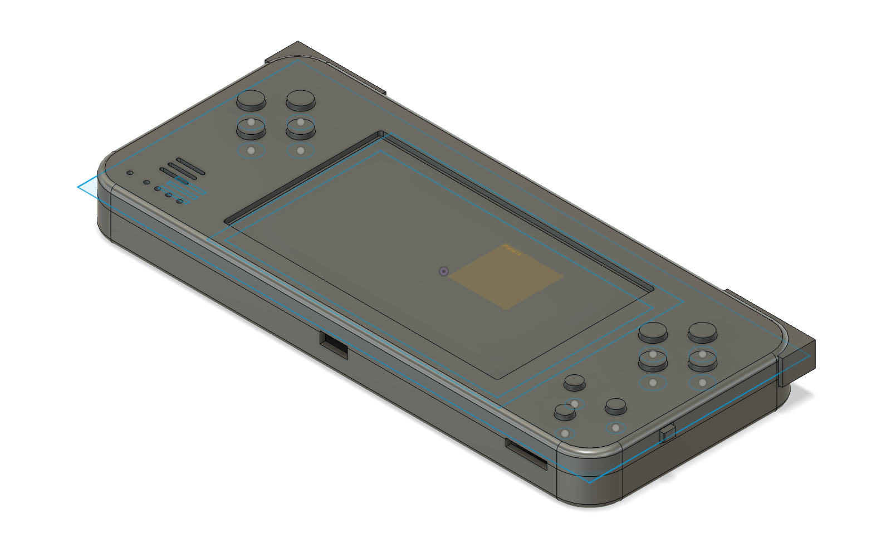

Open hardware handheld · Rev 1
Pocket retro, built from scratch.
A PSP-style handheld for 8- and 16-bit games around the Allwinner F1C200s. The board is KiCad, the case prints on any FDM printer, and it runs a port of MiyooCFW with its own cover-flow launcher.
SoCAllwinner F1C200s · 64 MB
Display4.3" 480×272 RGB
Controls13 buttons + L/R triggers
Power1S Li-ion · IP5306 · USB-C
Board176×70 mm · 4 layers
Case186×80 mm · PETG
f1gs.glb · drag to orbit
loading model…
01
Where it stands
two Rev 1 boards built
SoC, DRAM, bootFEL, U-Boot, SD boot, 64 MB
Power railsEA3059C bucks, 3V0 LDO
Buttons13 inputs, see PA1–PA3 note
Firmware bootsMiyooCFW, menu, emulators
LCD480×272, menu and games
Audiocodec, NS4150B, speaker
Battery gaugenot tested yet
Backlightnot tested yet
USB high speednot tested yet
Known Rev 1 issues
- L, R and MENU (PA1–PA3) have no pull-ups. These are touch-panel pins whose internal pull-ups don't work; the firmware reads them with a charge-then-sense trick. Rev 2 should add external pull-ups.
- No pin-1 marks on the silkscreen. Check the orientation of ICs, LEDs and polarised parts against the iBOM before soldering.
02
The board, live
KiCad sources rendered by KiCanvas
03
Make one
full guide in docs/BUILD.md
Order the board
Upload the Gerber zip, BOM and positions to JLCPCB. 4 layers, JLC04161H-7628.
hardware/production →Finish assembly
Fit the SoC and the hand-placed parts, then the LCD, battery and speaker.
assembly notes →Flash the card
Write the prebuilt image to a microSD card, or build kernel, menu and launcher yourself.
firmware →04
Files
everything needed to reproduce it
| What | Where | Format |
|---|---|---|
| Schematic and PCB | hardware/kicad/ | KiCad 10 |
| Fab package | hardware/production/ | Gerber zip, BOM (LCSC), positions, schematic PDF, iBOM |
| Board 3D model | hardware/3d/ | STEP |
| Print-ready case | enclosure/print/ | STL, 3MF, two-colour cap plate |
| Editable case | enclosure/source/ | Fusion .f3d, STEP, parametric Python |
| Kernel, menu, launcher | firmware/ | patches + Docker build |
| Emulator | firmware/emulator/ | QEMU board model |
| SD card image | Releases | .img.xz |
05
Gallery
Rev 1 hardware and the launcher





